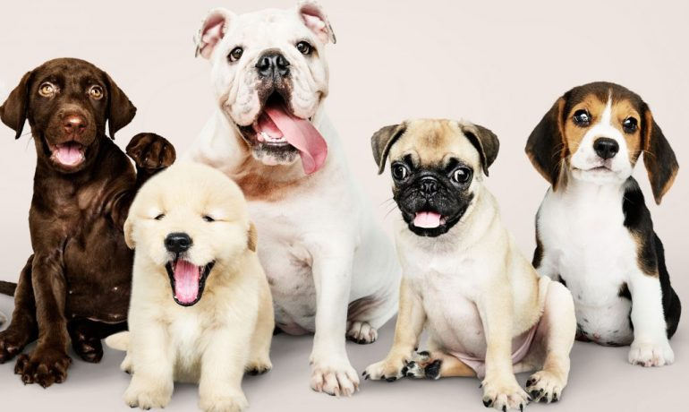
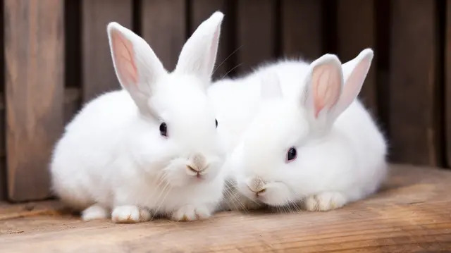
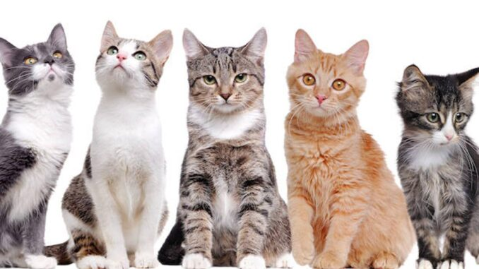

Guías de Alimentación
Información clave y clasificada para cuidar la salud de tus animales domésticos.

Perros
🟢 Alimentos Permitidos:
Carne cocida (sin huesos), Arroz blanco, Zanahoria hervida, Manzana (sin semillas).
🔴 Alimentos Prohibidos:
Chocolate, Uvas o pasas, Cebolla, Ajo, Huesos cocidos.

Conejos
🟢 Alimentos Permitidos:
Heno fresco (base de su dieta), Alfalfa (moderado), Rúcula, Hojas de zanahoria.
🔴 Alimentos Prohibidos:
Cebolla, Papa, Ajo, Alimentos con azúcar, Lácteos.

Gatos
🟢 Alimentos Permitidos:
Pollo cocido (sin sal), Pescado blanco, Pavita, Alimento balanceado de calidad.
🔴 Alimentos Prohibidos:
Uvas, Leche de vaca (les cae mal), Chocolate, Cebolla, Cafeína.
Pilares del Cuidado Diario
Más allá de la comida, tu amigo necesita atención constante en estos tres aspectos fundamentales para su longevidad:
Hidratación Permanente
El agua limpia es el nutriente más importante. Asegurate de lavar sus recipientes a diario para evitar la acumulación de hongos y bacterias que dañen sus riñones.
Actividad y Paseos
Los paseos diarios (en perros) y el enriquecimiento ambiental con juguetes (en gatos y conejos) disminuyen los niveles de cortisol, previniendo conductas destructivas en casa.
Medicina Preventiva
No visites al veterinario solo en emergencias. Los chequeos anuales, la desparasitación cada tres meses y el calendario de vacunación al día salvan vidas silenciosamente.
+1,500
Consultas Respondidas
100%
Amor por los Animales
Gratuito
Soporte de la Comunidad
Preguntas Frecuentes
Respuestas detalladas a las dudas más comunes que recibimos de los cuidadores en la comunidad.
¿Por qué el heno es vital para los conejos todos los días?
El heno aporta la fibra necesaria para mantener el sistema digestivo del conejo en movimiento (previniendo la peligrosa estasis intestinal). Además, el acto constante de masticarlo desgasta sus dientes, los cuales crecen de forma continua durante toda su vida.
¿Por qué se dice que los gatos adultos no deberían tomar leche?
A pesar del mito popular, la mayoría de los gatos pierden la enzima lactasa después del destete. Esto significa que se vuelven intolerantes a la lactosa. Darles leche de vaca suele provocarles diarreas, dolor abdominal y deshidratación.
¿Qué debo hacer si sospecho que mi mascota ingirió chocolate o cebolla?
El chocolate contiene teobromina y la cebolla compuestos que destruyen los glóbulos rojos de perros y gatos. Ante la menor sospecha, no induzcas el vómito por tu cuenta; comunicate inmediatamente con una guardia veterinaria de urgencia. El tiempo es oro.
¿Tenés dudas o consultas?
Dejanos tu mensaje en el formulario y te responderemos por correo electrónico lo antes posible. Estamos acá para ayudarte a resolver cualquier duda sobre la alimentación o el cuidado diario de tus compañeros de cuatro patas.